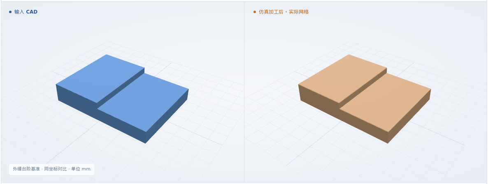
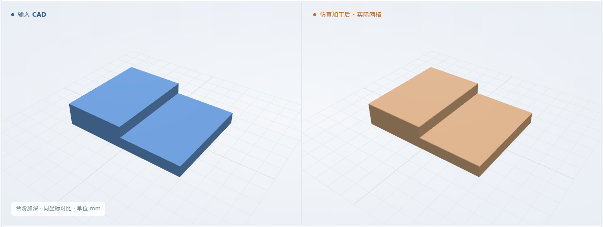
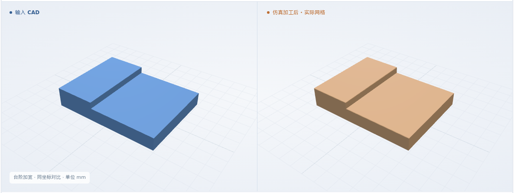
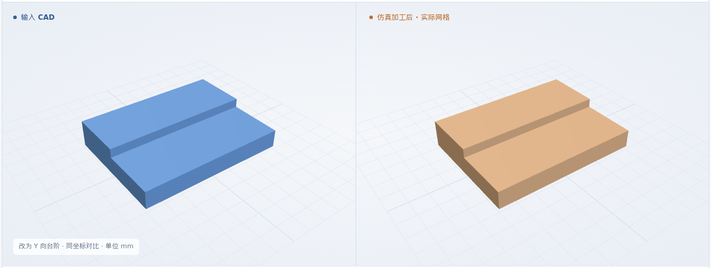
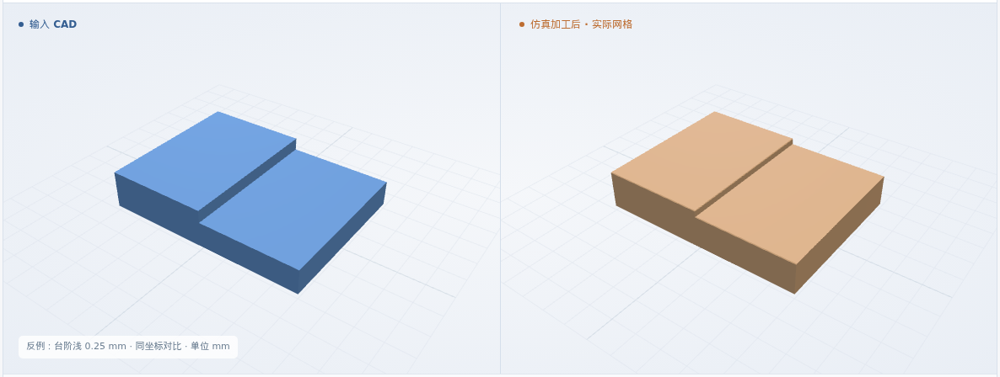
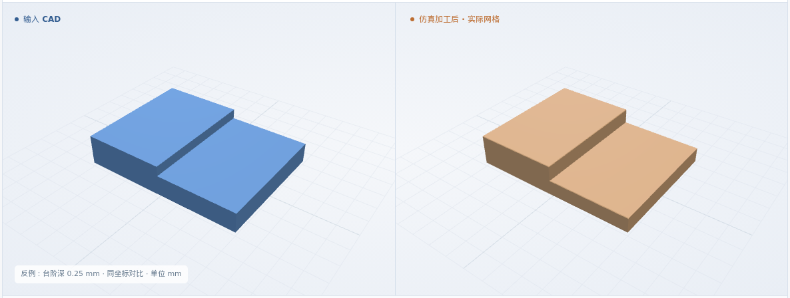
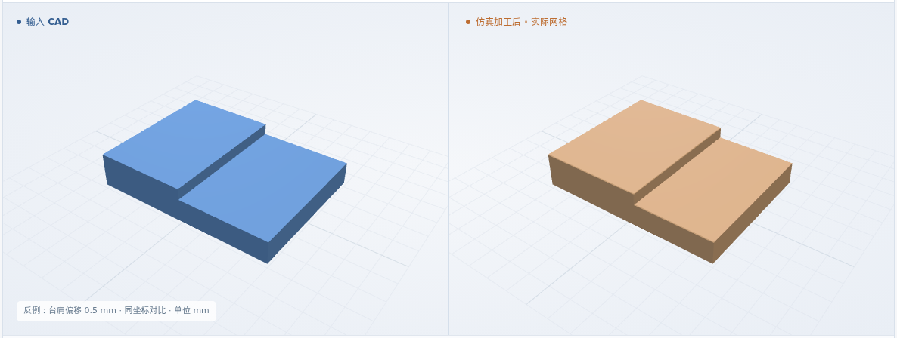
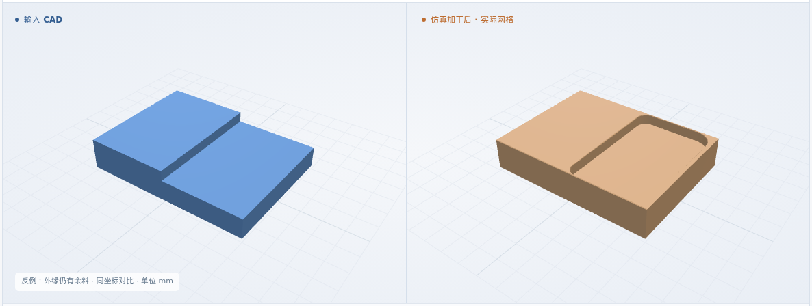

外缘台阶基准
X+ 侧台阶 · 台肩 X = 4 mm · 深 0.5 mm
最终网格 0.025 mm
体积 IoU99.9712%

本次新增：三条开口边的刀路延伸 · 保留台肩并清除外缘余料 · 实际平面圆弧 NC 去料
体积 IoU = 原 CAD 与实际剩料的交集 / 并集
X+ 侧台阶 · 台肩 X = 4 mm · 深 0.5 mm
最终网格 0.025 mm

X+ 侧台阶 · 台肩 X = 4 mm · 深 0.75 mm
最终网格 0.025 mm

X+ 侧台阶 · 台肩 X = 3 mm · 深 0.5 mm
最终网格 0.025 mm

Y+ 侧台阶 · 台肩 Y = 3 mm · 深 0.5 mm
最终网格 0.025 mm

8 × 6 × 1.5 mm 来料 · 通用 XYZ · φ1 平底铣刀 · 6061-T6 材料标签。更多轮廓见平面区域结果。
毛坯 → 早期去料 → 分层加工 → 接近完成 → 完成
三维回放暂不可用；上方实际图片和形状下载仍可查看。
X+ 侧，台肩 X = 4 mm，深 0.5 mm；其余正常用例复用该流程
工艺卡 PDF + 核对录入 + CAD + 要求 + 资源
结构化工艺卡 · PDF 同步存档↓输出绑定 CAD、工步和资源；明确保留台肩、切深、刀具与开口边策略。缺项或冲突则停止。
准备检查通过 ↗独立核对原 CAD；检查台肩避让、安全高度、实际切深和逐层覆盖，NC 原样保留。
NC 与方案一致 ↗执行同一 NC 去料；比较整体 IoU，再测台肩位置、台阶深度、底面和三条外缘余料。
几何比对与测量 ↗台肩偏差 ≤0.1 mm、台阶深度与三条外缘深度 ±0.1 mm、底面高差 ≤0.1 mm、剩余底厚 ≥0.1 mm。11 个截面、25 个底面点、21 个近外缘点；2 个网格步长保护带。
软件条件 ↗ · 完整结果 ↗制造验收依据仍待补齐；粗糙度、真实装夹和材料物理尚未验证。
正常入口均先拒绝错误 NC。专用反例去料后逐项检出；外缘余料例的中间深度仍通过，外缘检查失败。
仅修改 S1 台阶的 NC；仍与原 CAD 比较
最终网格 0.025 mm

仅修改 S1 台阶的 NC；仍与原 CAD 比较
最终网格 0.025 mm

仅修改 S1 台阶的 NC；仍与原 CAD 比较
最终网格 0.025 mm

仅修改 S1 台阶的 NC；仍与原 CAD 比较
最终网格 0.025 mm

四例 IoU、CAD 对比与实际回放，另有四个几何反例。